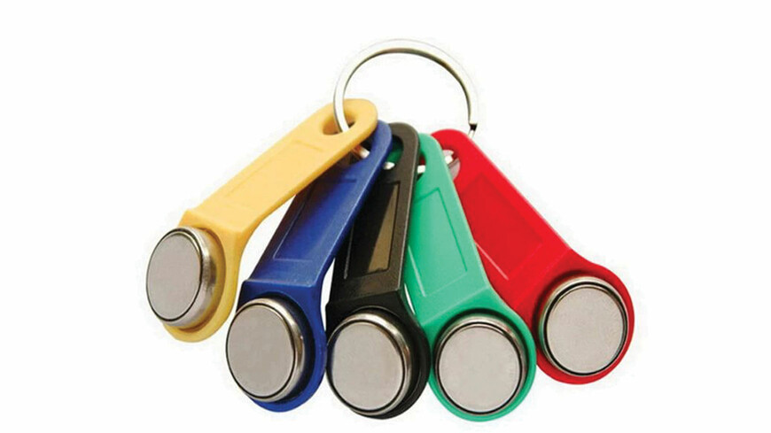

RFID (Radio Frequency Identification) je vid bežične identifikacije, koji koristi tzv. RFID tagove ili kartice, od kojih svaka ima jedinstveni identifikacioni broj (ID). Kada se kartica nađe u blizini čitača, njen ID biva očitan od RFID čitača.
RFID čitač je povezan sa razvojnim sistemom EasyPic v7, na kojem se nalazi mikrokontroler familije PIC. Čitač šalje očitan ID mikrokontroleru, nakon čega mikrokontroler to prosleđuje računaru preko RS-232 komunikacije. Računar šalje "odgovor" mikrokontroleru da li je radnik, čija je kartica očitana, u bazi zaposlenih radnika ili ne, i u skladu sa tim se uključuje odgovarajuća LED dioda na razvojnom sistemu, koja simulira otključavanje električne brave.
iButton je ključ je modul integrisan u čelično kućište u obliku novčića, na kojem je izgraviran jedinstven serijski broj (ID). Napravljen je uređaj u koji je "spakovana" elektronika sa AVR mikrokontrolerom, koji, nakon uspostavljanja kontakta između ključa i mikrokontrolera, očitava ovaj ID preko 1-wire protokola. Slično kao i kod RFID, ID se dalje šalje računaru preko RS-232, koji "odgovara" da li je radnik sa ključem u bazi ili ne. Na prednjem delu uređaja su signalne LED diode, crvena i zelena, koje služe kao indikacija da li je radnik u bazi.
